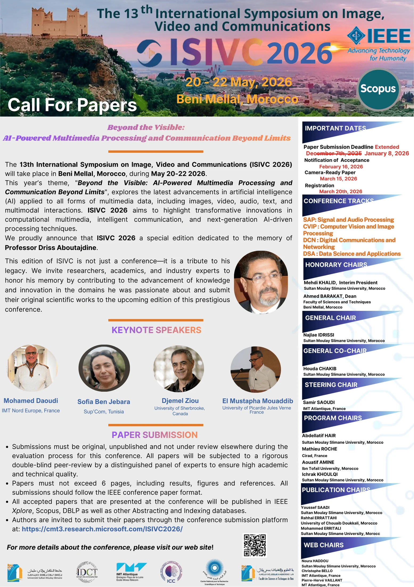
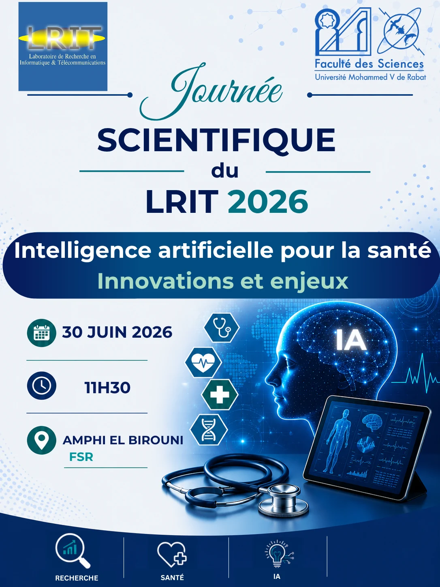
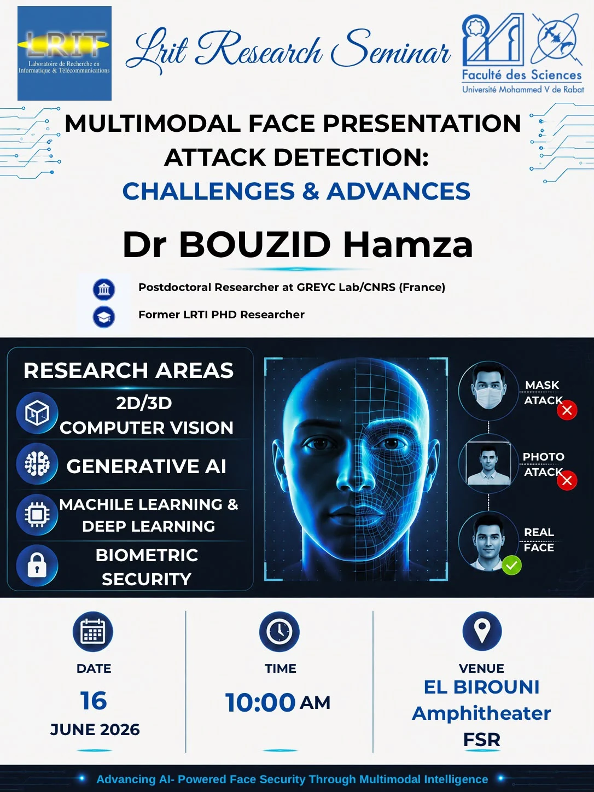
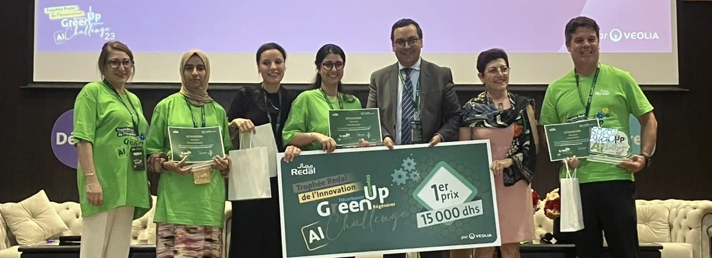
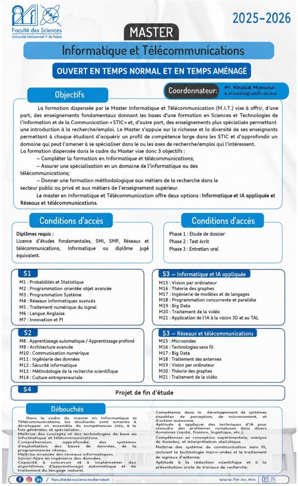

Manifestations · 21–23 mai 2026
ISIVC 2026
13th International Symposium on Signal, Image, Video and Communications — ISIVC
Découvrir ↗Événements, distinctions et formations : retrouvez les temps forts de la communauté.

13th International Symposium on Signal, Image, Video and Communications — ISIVC
Découvrir ↗
Intelligence artificielle pour la santé : innovations et enjeux
Découvrir ↗
Multimodal Face Presentation Attack Detection: Challenges & Advances
Découvrir ↗
Premier prix du hackathon Green Up Challenge IA, recensé dans les distinctions du laboratoire.
Découvrir ↗
Master Informatique et Télécommunications et Licence Réseaux et télécommunications : les plaquettes à consulter.
Découvrir ↗Les événements datés sont présentés comme des archives ; les conditions d’accès aux formations sont à vérifier auprès de la Faculté.